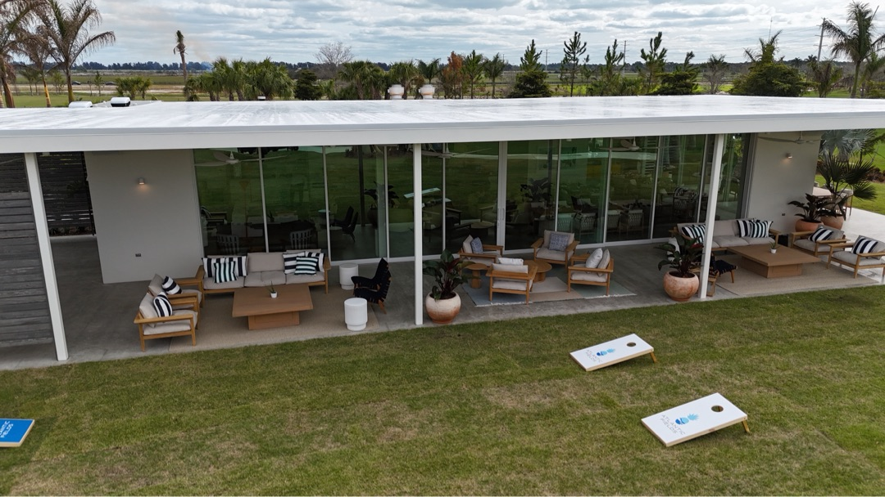
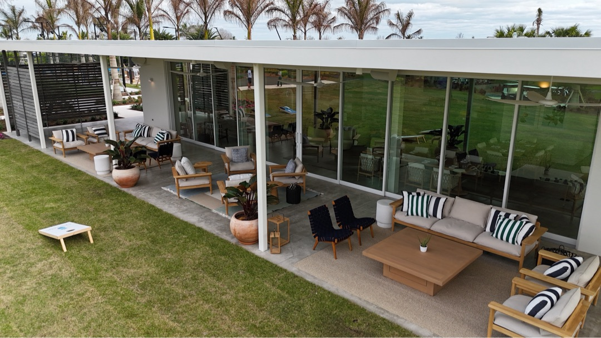
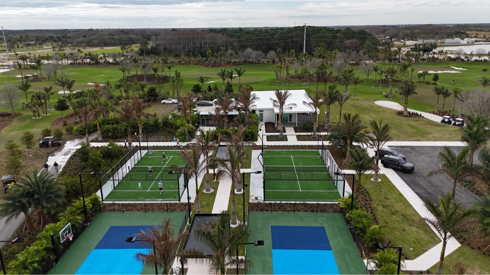
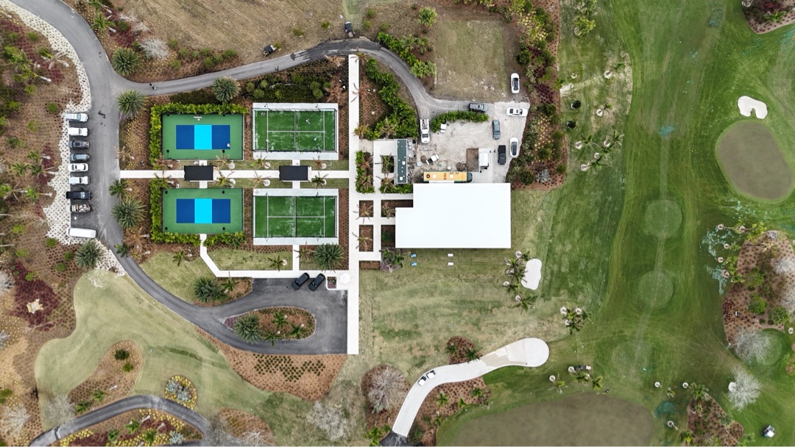
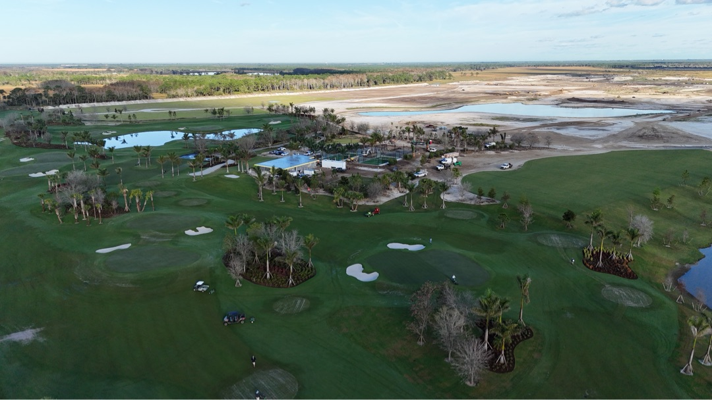
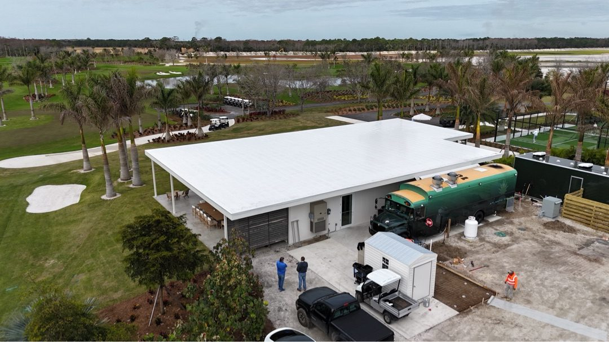
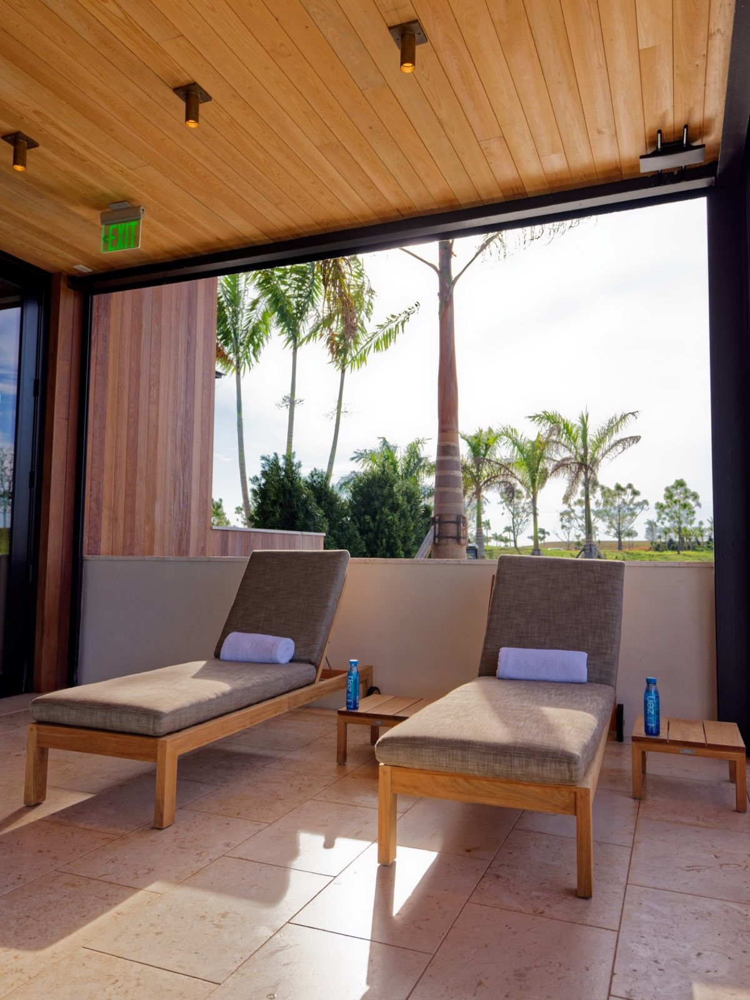

Atlantic Fields
Sales Pavilion · Project No. 01
The Sales Center

Before the Tom Fazio course was open. Before the clubhouse foundation was poured. Before the first lot was sold - the Sales Center was already inside the gates. It is the building Discovery Land hosts a prospective member in. The first impression. The first surface in the entire 1,500-acre community where ACG was the glazing contractor of record.
Conceived as a long, low pavilion of stacked white planes and glass, the Sales Center reads less like a sales building and more like a guest residence already on the property. The brief was simple: dissolve the wall. We delivered a floor-to-ceiling storefront elevation with pocketing multi-slide doors that disappear into the pockets, opening the entire interior to a covered-veranda living room and the lawn beyond.
Proctor Construction was the general contractor. ACG executed every glazed opening on the building.

Discovery Land's brief called for transparency without ostentation. Every glazed opening carries that intent - minimal visible framing, a flat horizon line at the soffit, and the same restrained palette inside and out. The architecture stays quiet so the property does the talking.


The Sales Center anchors a small piece of the community ACG would later return to glaze: the racquet club courts. The aerial above is taken looking south - the white pavilion at the head of the green padel courts, the blue pickleball pair beyond, palms and golf cart paths at the perimeter, the Tom Fazio fairway curling across the right side of the frame.
It is the room where the property is presented to the people who will eventually live there. Every glazed surface had to perform on the presentation. Every detail had to be ready for the lot conversations happening inside from day one.
Aerial documentation from the early phase of the build. Bunkers shaped, lakes filling in, the polo grounds preserved at the perimeter. The Sales Center is the small white roof at center.

A long, low pavilion of stacked white planes and glass - less a sales building, more a guest residence already on the property.
The complete envelope. ACG furnished and installed the full storefront elevation that wraps the public side of the pavilion, the pocketing multi-slide door system on the patio elevation, the rear-of-house glazing on the back service block, and every interior glass division between salon and presentation rooms.
Coordination with Proctor Construction's structural team and Discovery Land's design rep was direct, daily, and on the property. The result reads in person exactly the way the rendering reads on a screen.
A detail of the back-of-house service block during late construction - food truck staging visible at right, palm shade lining the perimeter, the racquet club cabana frame just beyond.

The Sales Center was the first. The Golf House and Discovery Performance Center followed. Below are the two additional ACG projects already completed inside the gates.

A members-only halfway house with full-height window wall and a Euro-Wall multi-slide opening to the Tom Fazio fairway.

A wellness and golf training pavilion with storefront-wrapped cardio floor and a Euro-Wall recovery-terrace opening.
If you're a builder, architect, or owner working inside the gates, ACG already knows the property's standards and Proctor Construction's submittal cadence. We'll quote your scope within 48 hours.